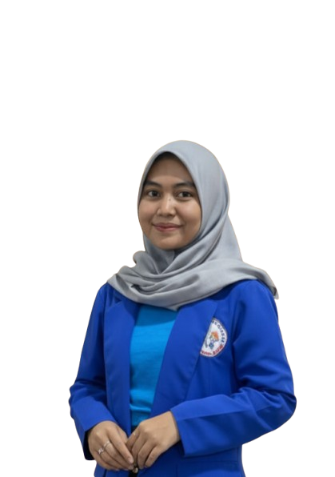

Aqilah Balqis Safitri, S.Pd.
Pendidik Profesional yang Berdedikasi, Kreatif, dan Inklusif. Lulusan Sarjana Pendidikan Matematika.
Lihat Tentang Saya
Tentang Saya
Halo! Saya Aqilah Balqis Safitri, seorang Sarjana Pendidikan dari Universitas Indraprasta PGRI dengan hasrat untuk menciptakan lingkungan belajar yang positif dan menyenangkan. Saya percaya bahwa setiap anak memiliki potensi unik, dan tugas saya adalah membimbing mereka untuk menemukannya. Dengan pendekatan yang empatik dan materi ajar yang kreatif, saya berdedikasi untuk memajukan pendidikan generasi penerus.
Download CVLulusan Pendidikan
Sarjana Pendidikan Matematika dari Universitas Indraprasta PGRI dengan IPK Cumclaude.
Pendekatan Empatik
Mengutamakan pendekatan yang berpusat pada siswa (student-centered) dan memahami kebutuhan setiap individu.
Media Ajar Kreatif
Terampil dalam merancang dan menggunakan media ajar inovatif (Canva, PowerPoint, alat peraga) untuk meningkatkan minat belajar.
Pendidikan
UNIVERSITAS INDRAPRASTA PGRI
Sarjana Pendidikan Matematika
SMK NEGERI 51 JAKARTA
[Jurusan Anda di SMK, misal: Multimedia]
SMP NEGERI 210 JAKARTA
Sekolah Menengah Pertama
SD NEGERI 05 CIRACAS
Sekolah Dasar
"Saya percaya pendidikan bukan hanya tentang mengisi ember, tetapi menyalakan api. Ruang kelas saya adalah zona aman untuk bereksplorasi, bertanya, dan tumbuh bersama." - Aqilah Balqis Safitri
Kemampuan
Adobe Premier Pro
Ms. Word
Photoshop
Ms. Excel
Power Point
Kualifikasi & Pengalaman
Sarjana Pendidikan (S.Pd.)
Universitas Indraprasta PGRI, Jurusan Pendidikan Matematika
Kuliah Umum Program Kreativitas Mahasiswa (PKM)
Diselenggarakan oleh Universitas Indraprasta PGRI.
Uji Kompetensi Video Editing (Level III KKNI)
Pelaksanaan di SMK Islam PB. Soedirman 1.
Workshop Art Day & Penulisan Naskah
Mengikuti workshop di Institut Kesenian Jakarta (IKJ).
Pengalaman Kerja: Agro TV Indonesia
Bertugas sebagai Editor, Desain Web, dan peliputan ke luar kota.
Hubungi Saya
Saya sangat terbuka untuk berdiskusi mengenai peluang kolaborasi, kesempatan mengajar, atau sekadar berbagi ide tentang pendidikan. Mari terhubung!